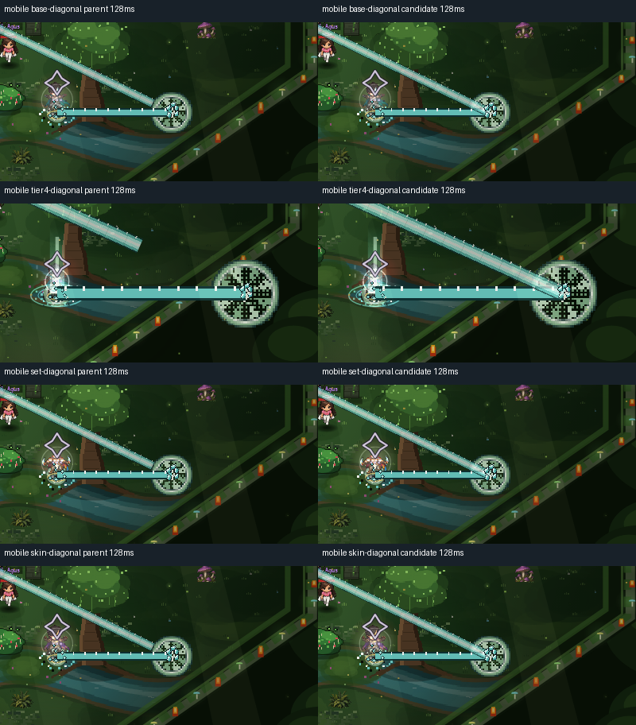
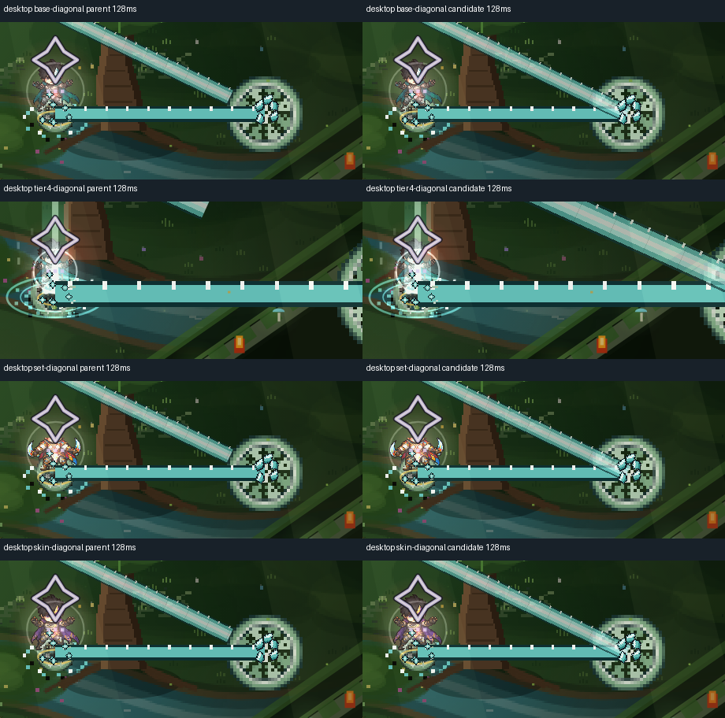

Nahir — eco largo
EN_CORRECCION / NO_INTEGRAR. Reutiliza nh_cut: ocho fases nativas de 16×16. La longitud se ajusta sólo en el eco, sin estirar sus teselas.
Fuente nativa existente: ocho fases, ampliadas ×6 para inspección.
Recortes móviles sin reescalar, mismo escenario y 128 ms. Izquierda main; derecha candidato.
Recortes de escritorio sin reescalar. No sustituyen el gate compuesto completo.